summarizing and graphing data in spss
SPSS (Statistical Package for Social Scientists) is a software package designed to provide a wide range of data analysis capabilities, ranging from the basics to more advanced techniques.
The purpose of this practical is to introduce you to SPSS and complement the theoretical material presented in the lectures, discussions, and reading material. The experience gained in analyzing and presenting data should also help you to develop your confidence in using and presenting numerical results.
In this practical, we’re going to focus on some of the basics - importing and labelling data, generating descriptive statistics, and creating plots. In the coming weeks, we will see some of the more advanced techniques, including regression analysis and hypothesis testing.
By the end of this practical, you should:
be able to import data into SPSS
summarize data using SPSS
produce graphs of your data using SPSS
If you have not already, you should download the Week 6 Data from Blackboard and save it to your EGM101 folder on OneDrive.
getting started
To open SPSS, use either the Start menu (Start > IBM SPSS Statistics > IBM SPSS Statistics), or double-click the desktop icon (if it exists). You should see the following welcome screen:
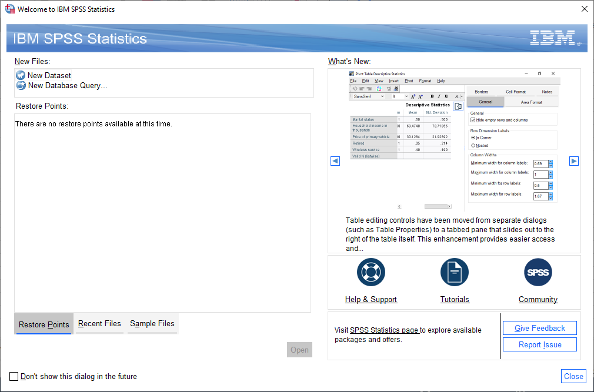{kind=link}
To get started, click on New Dataset, then Open. You should see a blank spreadsheet window open up:
{kind=link}
Click on the folder icon in the upper left corner of the window, or select Open from the File menu
(File > Open > Data).
Navigate to the folder where you have saved armaghdata.csv, and make sure that Files of type is set to
CSV (*.csv). Select armaghdata.csv, then click Open to start the import process.
importing csv data
The file we’re using here, armaghdata.csv, is the exact same dataset as we used last week - all I have done is
clean up the entries (removing non-numeric characters), and change the format from fixed-width to
comma separated values (CSV), to make it easier to import
into SPSS.
Note
SPSS is able to import data from Excel workbooks, but not when the workbook contains “extras” such as graphs, sub-tables, etc. - to use the Excel workbook from last week’s practical, we would have to delete all of these.
As an additional exercise, you could start with the armaghdata.txt file that we used in last week’s practical.
First, import the data into Excel as before, and save the file as either an Excel workbook (.xlsx
extension) or CSV file (.csv extension).
You should see the Text Import Wizard - Step 1 of 6 window shown below:
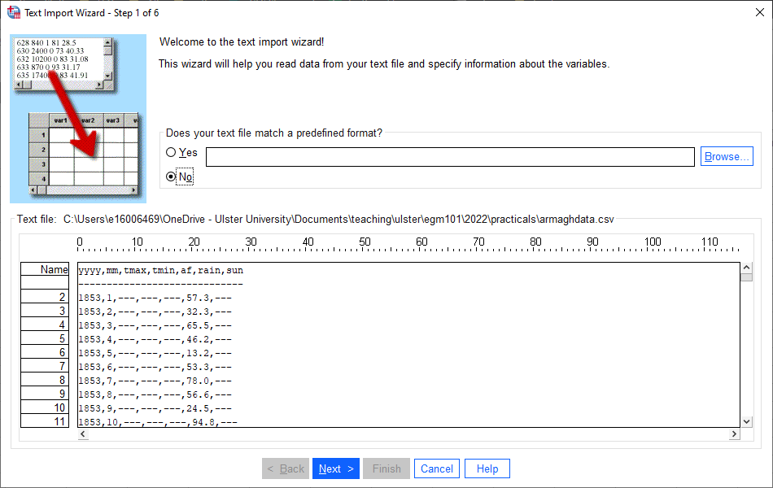{kind=link}
Make sure that you have selected No for Does your text file match a predefined format?, then click Next
to bring up the second step:
{kind=link}
Most of these should look the same, but just in case, make sure to select Delimited under How are your
variables arranged?, Yes and Line 1 under Are variable names included at the top of your file?, and
Period under What is the decimal symbol?. Once you’ve checked all of these, click Next
{kind=link}
Here again, the selection should look the same as it does above, but be sure to double-check before clicking
Next.
{kind=link}
This is an important step if you are importing a CSV file that has text fields as well as numeric fields. As you
saw last week, though, the data in this file are only numeric, so the only thing you need to check is that Comma
(and only Comma) is selected as the delimiter between variables. Click Next to bring up step 5:
{kind=link}
In this window, you can change the name and format for each variable (column) of your data.
Note
Like many software packages, SPSS has rules for variable names. A brief summary of these rules:
Variable names must be unique
Variable names can be up to 64 bytes (effectively, 64 characters) long
The first letter of the variable name must be a letter or one of
@,#, or$Variable names can contain periods (
.), but they cannot begin or end with a period.Variable names cannot contain spaces.
Reserved keywords such as
ALL,AND,BY, and so on (see link above for a full list) cannot be used as variable names.
Change the variable names to match what you see above, remembering that AirFrost or Air_Frost are valid names,
while Air Frost is not. Click Next to bring up the final step of the import wizard:
{kind=link}
If you have a particular format that you will need to import repeatedly into SPSS, you can save the format at this
step, which will make files of this type easier to import in the future. We don’t need to save this format for future
use, so you can click Finish to import the data.
the spss interface
You should see that there are actually two windows that open: the Data Editor, and the Viewer.
data editor
We’ll cover the Outputs window in a moment, but first have a look at the Data Editor window:
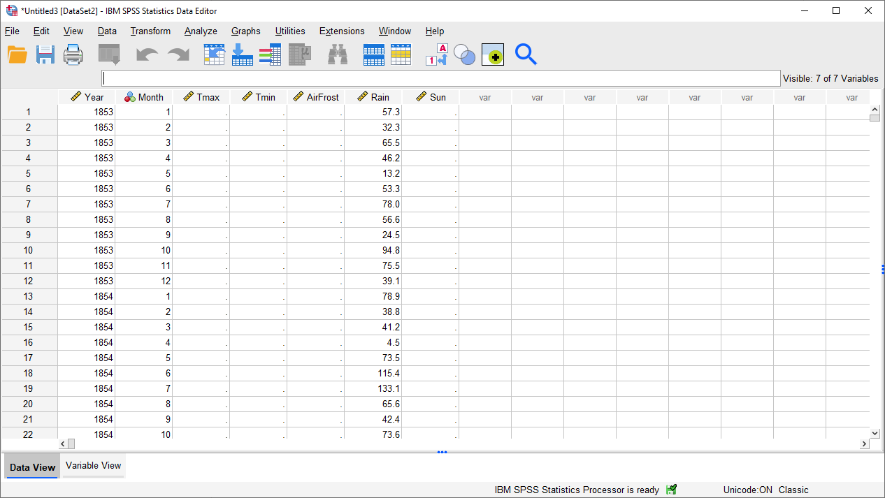{kind=link}
We will be using this data for the next two practicals (as well as your assignment!), so make sure that you save
your imported data onto your OneDrive folder as ArmaghData.sav:
{kind=link}
This will make it easier for you to re-open your data in future sessions.
At the bottom of this window, you should notice two tabs: Data View and Variable View. We are currently looking at the Data View, which is where you can input data, exactly like you would with Excel. There are a number of notable differences between the SPSS Data View and Excel, though:
SPSS uses slightly different terminology than we saw with Excel, though. In the SPSS Data View, rows are called cases, while columns are called variables.
The SPSS Data Editor only allows you to enter single values into each cell - no formulas.
Unlike in Excel, we can’t start a new sub-table in SPSS. The spreadsheet is rectangular, and each cell represents the value of a variable for a particular case.
Later on, we will see how we can calculate new variables in SPSS. For now, click on the Variable View tab:
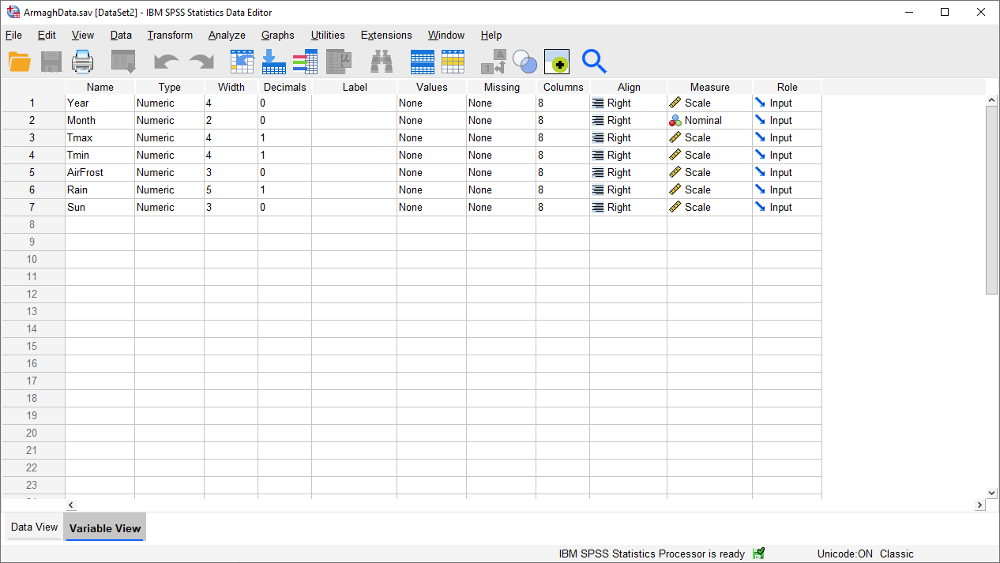{kind=link}
In this tab, we can (among other things):
change variable names
change the format/type of variables (e.g., numeric, text, date/time)
change how variables are displayed in the table or stored on disk
add a Label (a more complete descriptions of the variable, including units) to a variable
add Value Labels. Similar to Labels, this enables us to provide more complete explanations for values of a variable, which can be especially useful where numeric codes are used to represent non-numeric categories
change the type of measurement (e.g., scale, ordinal, nominal) for each variable
Let’s add a Label to each of our variables. To do this, click on the cell in the corresponding row of the Label
column, then type in the description. For example, for the Year variable, you could write “Year recorded”.
When you’re done, the Variable View should look something like this:
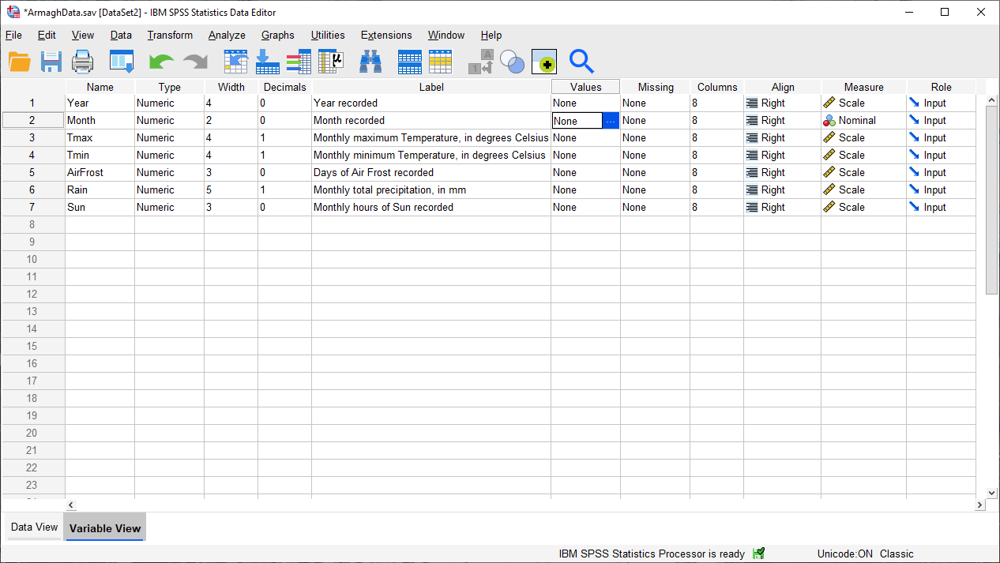{kind=link}
The next thing we’ll do is add Value Labels to the Month variable. When you hover over a cell in the
Values column of the Variable View, you should see a blue button with three dots appear, like in the image
above. Click on this button to bring up the Value Labels dialog:
{kind=link}
To add a Value Label, you need to first type in the Value in the first field, then type in the Label
in the second field. For example, to add a Value Label for January (month 1), you would type “1” in the Value
field, and “January” in the Label field, as above. Click Add to add the label.
To add another label, you can add it in the same way. Proceed until you have entered labels for all 12 months, then
click OK to return to the Variable View window. You should see that instead of “None” in the Values
column for the Month row, you now see {1, January}:
{kind=link}
This indicates that you’ve added Value Labels to that variable - to see all of the labels, you’ll need to
re-open the Value Labels dialog.
viewer
Let’s switch now to the Viewer window. This is where SPSS writes the outputs of your analysis - tables,
charts/graphs, etc. The output in this window is saved separately from your data, in a separate format (.spv).
Save this to your OneDrive folder as ArmaghData.spv, so that you have a record of the different analyses you perform
as you work through the practical.
{kind=link}
In this window, you can see that SPSS has written 7 variables and 2036 cases to the “working file”, and you
also see what the type and format of each variable is. Each of the 7 variables imported and written are numbers,
which means that they have a format of F (for Fortran,
a computer programming language). The numbers after the F indicate how many digits before/after the decimal point
are stored by the software - so, F4 indicates that it’s a four-digit number with no decimals, while F4.1
indicates that there are four digits before the decimal place, and one digit after the decimal place.
We won’t worry too much more about this now, but we’ll return back to the viewer window once we start plotting our data. For now, switch back to the Data Editor window.
computing a new variable
The next thing we’ll do is use SPSS to calculate a new variable. To highlight some of the difference between SPSS and Excel, we’ll do the same thing that we did in last week’s practical - namely, calculate the monthly mean air temperature as the arithmetic mean of the monthly maximum and minimum temperatures:
To do this, select Compute Variable from the Transform menu (Transform > Compute Variable). This will open the following dialog:
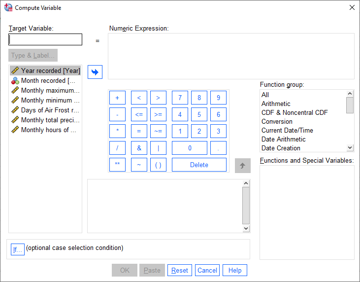{kind=link}
Under Target Variable, type the new variable name (Tmean). Next, enter the formula to use to calculate the new
variable by typing in a formula like you might on a calculator - you can also use a number of pre-programmed functions.
For now, though, we can basically type in the formula above as-written:
(Tmax + Tmin) / 2
or click on the variable names to insert them into the Numeric expression:
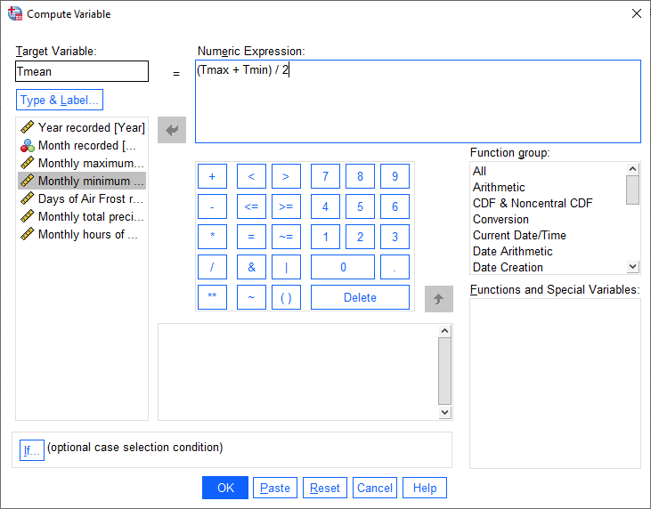{kind=link}
You can also add a Label and set the Type of the new variable by clicking on Type & Label under the
Target Variable field. This will bring up the following dialog:
{kind=link}
The Label for the variable should be “Monthly mean air temperature, in degrees Celsius” (similar to what we
used for Tmax and Tmin), and the Type is Numeric. Click Continue to return to the previous window,
then click OK to create the new variable:
{kind=link}
The new variable is entered into the table after all of the variables, but you can change the order in the
Variable View tab, by clicking on the row of the variable you want to move, and dragging it to the new position:
{kind=link}
Go ahead and do this as well, so that the three temperature variables (Tmax, Tmean, Tmin) are displayed in
order. Once this is done, be sure to Save the data file before continuing.
descriptive statistics
Now that we’ve imported our data, added labels and checked the data types, and calculated a new variable, we can start looking at the ways that we can use SPSS to describe and visualize our data, starting with calculating descriptive statistics.
Open the Descriptive Statistics dialog from the Analyze menu (Analyze > Descriptive Statistics > Descriptives):
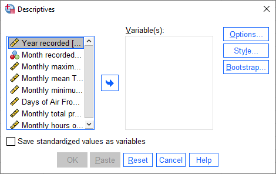{kind=link}
Here, you can select which variables you want to describe by highlighting them in the left-hand field and clicking the
arrow button in the middle of the window, or by double-clicking on them. To remove variables from the calculation, you
do the same by highlighting them in the right-hand field.
We want to see descriptive statistics for all three temperature variables (Tmax, Tmean, Tmin), as well as
monthly total precipitation (Rain) - move all of these variables to the field on the right side of the window:
{kind=link}
Next, click on Options to choose which descriptive statistics to calculate:
{kind=link}
SPSS will only calculate the statistics that we tell it to, using the Options dialog. We want to calculate the
mean, standard deviation, variance, range, minimum, maximum, and standard error of the mean (S.E. mean) for each
variable - make sure that each of these boxes are checked, then click Continue to return to the previous window.
Now, click OK to start the calculation.
In the Viewer window, you should see that SPSS has added a table with the requested calculations:
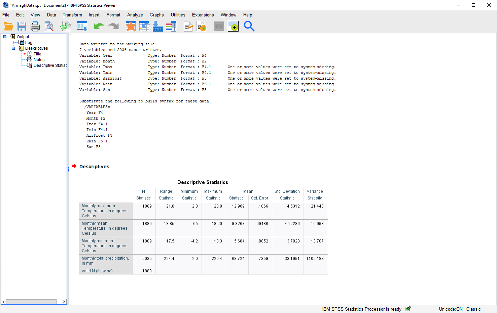{kind=link}
Here, you can see that the rows of the table correspond to each variable, while the columns correspond to the
statistics. You can also see that there are different values of N - remember that this is because the temperature
record doesn’t start until April 1865, but the rainfall record begins in January 1853.
Questions
Which of the temperature variables has the largest variance/standard deviation? Why do you think this might be the case?
What is the highest recorded monthly rainfall in Armagh? What about the lowest?
grouping data
The statistics we calculated above and displayed in the Viewer window are for the entire record (1853 - 2022). We might be interested in descriptive statistics for specific months or subsets of the data, however, which means we have to group the data before calculating the descriptive statistics by splitting the data, or by selecting specific cases. We’ll look at both options below.
splitting data
To split the data, click on the Split File button from the Data Editor (red box below), or by selecting Split File from the Data menu (Data > Split File):
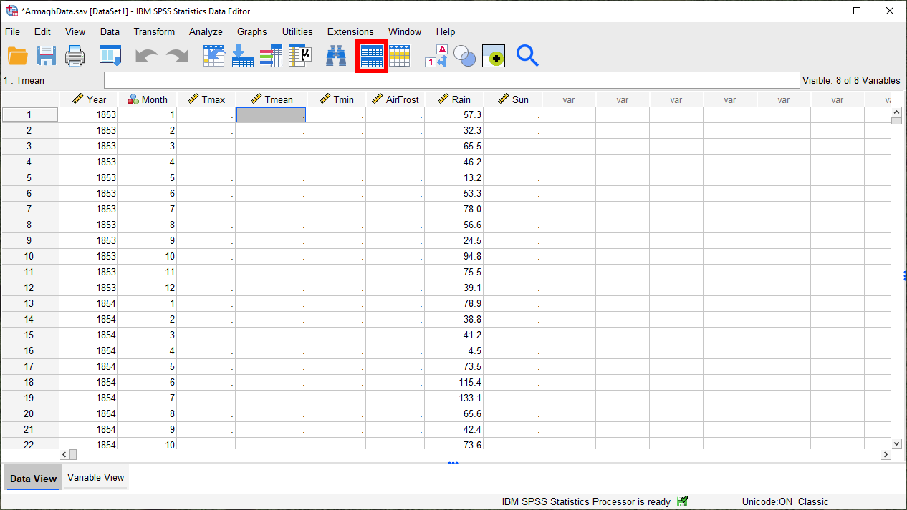{kind=link}
This will open the Split File dialog:
{kind=link}
We want to split the data based on the Month variable, so select Compare groups and move the
Month variable to the Groups based on field, in the same way that you selected variables for calculating
descriptive statistics:
{kind=link}
Make sure that you select Sort the file by grouping variables as well, as the file is not currently sorted.
When you click OK, you should see that the file has sorted by Month (with month 1 at the top):
{kind=link}
Now, calculate descriptives again (Analyze > Descriptive Statistics > Descriptives, or by pressing the
Run descriptive statistics button from the Data Editor), you should see that the Viewer window displays
a new table, with a section for each month:
{kind=link}
Note that because we have set labels for the Month variable, each table has the category label displayed
above it, instead of just the numerical value.
You can also change the title for each of the entries in the Viewer log - this can help you differentiate between the different analyses you have performed as you look back at the results. Go ahead and change the second “Descriptives” entry to say “Monthly Descriptives” by clicking on the text and typing in the new name:
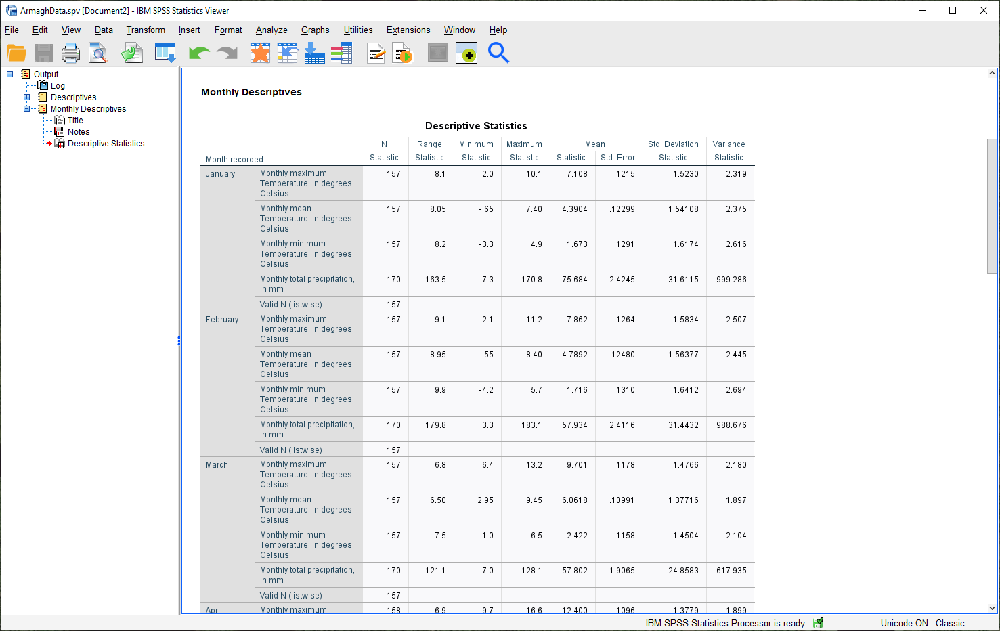{kind=link}
In the image above, you can see that you can also change the titles of each table in the same way - for example, to
remove the “Month recorded = ” from each entry.
Have a look at the tables in the Viewer window, and see if you can answer the questions below before moving on.
Questions
Which months have the largest variation in temperature? Why do you think this might be the case?
In what month was the highest recorded monthly rainfall recorded in Armagh? What about the lowest?
Note
To answer the above questions, it might also be easier to re-calculate the statistics using a single variable.
recoding values
Meteorological seasons are defined by splitting the year into four periods of three months each, which helps with comparing seasonal and monthly statistics between years. The seasons are defined as follows:
Spring: March, April, May
Summer: June, July, August
Autumn: September, October, November
Winter: December, January, February
We can use SPSS to assign a season to each of our data values, based on the month that it was recorded. To do this, we use a tool called Recode into different variables (Transform > Recode into different variables). When you select this, you should see the following dialog:
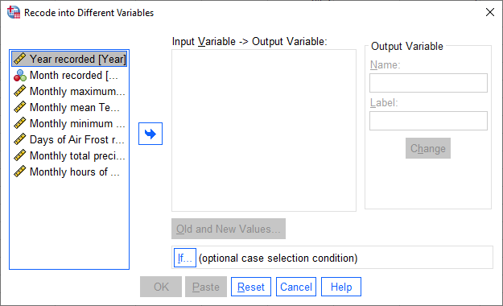{kind=link}
The variable that we want to recode is Month, so add that to Input Variable -> Output Variable. The
Output Variable that we want to create by recoding is Season, so add that to the Name of the
Output Variable, and fill in a Label as well:
Now, we have to tell SPSS how to recode the variable. That is, what values of Month determine each value of
Season? Click on Old and New Values to bring up the following dialog:
{kind=link}
Here is where we tell SPSS how to recode the values of Month into the new Season variable. Because each
season is defined by a range of month values, select Range under Old Value, and enter the values 3 and 5 into
the two boxes. Under New Value, enter a value of 1:
{kind=link}
This means that anywhere the value of Month is equal to 3, 4, or 5 (corresponding to March, April, and May),
the Season variable will have a value of 1 (corresponding to Spring). Click Add to add this value to the
Old –> New table, then proceed to enter the following values:
Summer: Old: 6 through 8, New: 2
Autumn: Old: 9 through 11, New: 3
Winter: Old: All other values, New: 4
Here, we use All other values to recode winter. The table should look like this:
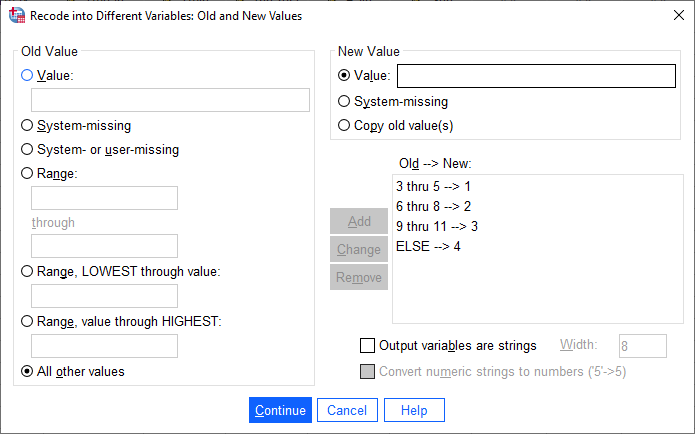{kind=link}
Click Continue to go back to the Recode into Different Variables dialog, which should look like this:
{kind=link}
Click OK to perform the recoding. You should now see a new variable, Spring, in the Data Editor.
Just like we did with the months, you can add Labels to the new variable so that when you compute descriptive
statistics or perform other calculations, the names will make more sense:
{kind=link}
Enter labels for the variable now, in the same way that you did earlier for Month.
Now, we can look at descriptive statistics for the seasons. First, we need to split the data based on this new
variable - either click on the Split File button, or choose Split File from the Data menu (Data >
Split File). Choose Compare groups and Groups Based on Season:
{kind=link}
Click OK. Next, open the Descriptive Statistics dialog again (Analyze > Descriptive Statistics >
Descriptives). For this step, we only want to see the descriptive statistics for precipitation, so make sure
that the only variable selected is Rain:
{kind=link}
Double-check that the same statistics are still selected by clicking on Options. Once you have checked this,
click OK to return to the Descriptives dialog, and click OK again to calculate descriptive statistics.
You should see this table in the Statistics Viewer window:
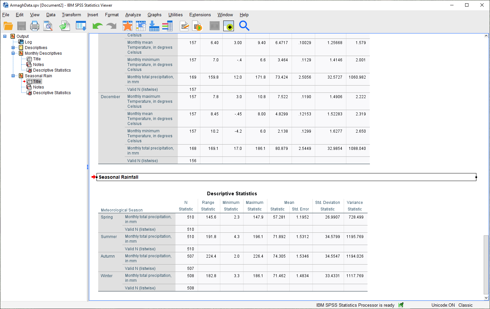{kind=link}
Rename the table to “Seasonal Rain” as above, and be sure to save both the .spv file and the .sav file.
As a final step, undo the split by opening the Split File dialog again (Data > Split File), and selecting Analyze all cases, do not create groups. Do this now, before moving on to the next section.
selecting cases
The final way that we’ll look at to select subsets of our data is by selecting cases (or groups of cases). In this case, we’re interested in the record from 1951 - 1980.
Open the Select Cases dialog by clicking on the Select Cases button (outlined in red below), or from the Data menu (Data > Select Cases):
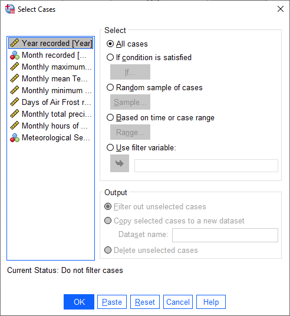{kind=link}
In the Select Cases dialog, we want to select cases where Year is between 1951 and 1980 - that is,
we want to select cases if a particular condition is satisfied. So, click on If condition is satisfied, then
click the If button to define the condition. This will open the Select Cases: If dialog, where you can enter
the following formula:
(Year >= 1951) & (Year <= 1980)
{kind=link}
This formula tells SPSS to select all cases where Year is both greater than (or equal to) 1951, and (&)
where Year is less than (or equal to) 1980. When you have entered the formula, click Continue to return
to the Select Cases dialog:
{kind=link}
Click OK. You should now see that there is a new variable in the table, filter_$:
{kind=link}
This variable has a value of 1 where the case is included in the selection, and 0 where it is not. If you scroll
through the table, you should see that cases where Year is between 1951 and 1980 have a 1, and a 0 where this is
not true.
Now, we can summarize the temperature and precipitation for those years, using descriptive statistics. Once again,
open the Descriptive Statistics dialog and select the three temperature variables (Tmax, Tmean,
and Tmin), plus the precipitation variable (Rain). When the tool finishes running, you should see the
following table output in the Statistics Viewer window:
{kind=link}
Don’t forget to change the title of this section to make it clear that these are values for 1951-1980.
Finally, to undo the filtering, open Select Cases again, and click the button for All cases. Do this before continuing to the next section.
displaying data
In the final part of this practical, we’ll look at how we can use SPSS to display data in graphical form. There are many more options available than examples covered here, and a wide variety of tutorials/walkthroughs available online, so feel free to continue exploring once you’ve reached the end of the practical.
histogram
As a first example, we’ll create a histogram of rainfall values using all of the available data. To begin, open the Chart Builder (Graphs > Chart Builder):
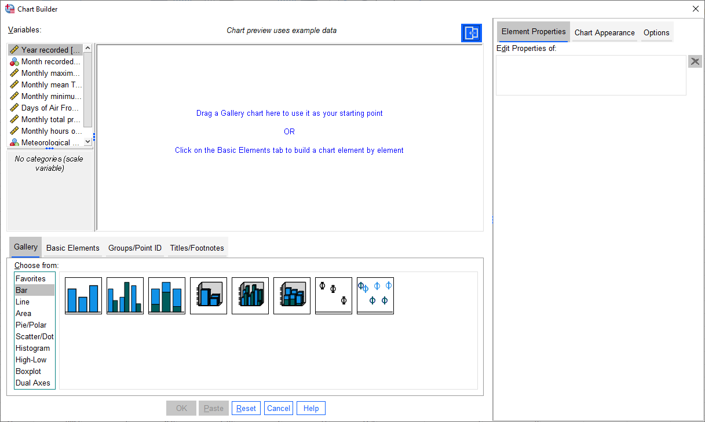{kind=link}
The Chart Builder is one of the ways that SPSS provides to put together charts of your data (we’ll cover
another one in the next section). In the Gallery tab in the bottom panel, choose Histogram from the list.
Next, in the top panel, select Monthly total precipitation from the list of Variables and drag it to place it
in the X-Axis:
{kind=link}
If you like, you can also change other properties/parameters such as the axis labels or chart title under the
Element Properties tab on the right side of the window. You can also change the colors of the bars or other display
properties under the Chart Appearance tab.
The last thing we’ll do is be sure to check the box for Display normal curve:
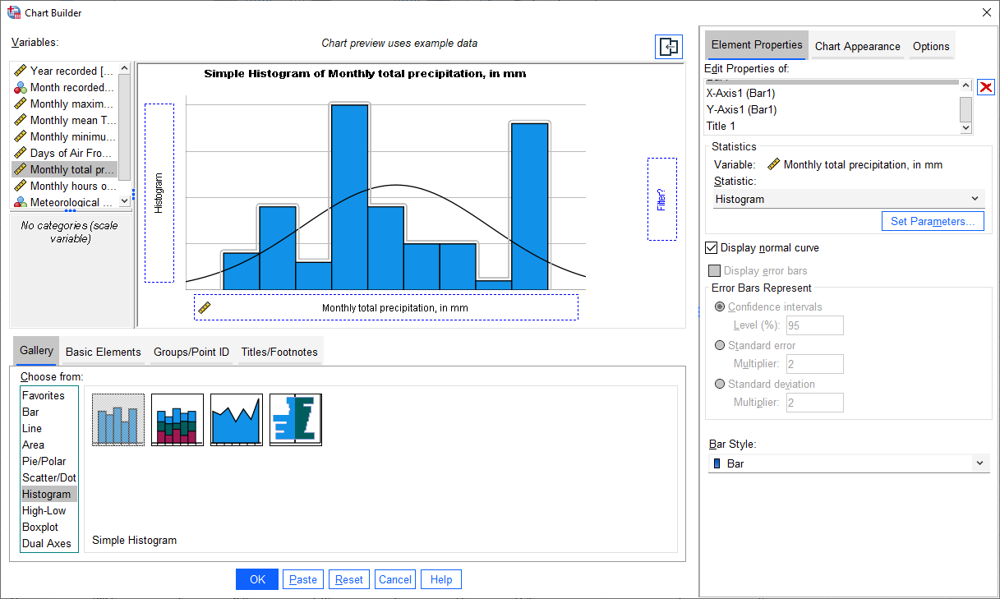{kind=link}
One thing to keep in mind is that this is not actually the final chart - this is just a “dummy” display. When you
click OK, SPSS will take a minute before displaying the chart in the Statistics Viewer window:
{kind=link}
As a final step, you can edit the entry name in the contents panel and change the section title in the
viewer panel.
Question
Describe the distribution of rainfall - does it follow a normal distribution, or is it skewed? Is the “tail” on one side of the curve larger than the tail on the other side? What other properties do you notice?
bar graph
The second, and final, chart we will produce is a chart showing the mean rainfall by month, similar to the chart we made in Excel for monthly mean temperature.
Warning
Before proceeding, make sure that you have turned off any file splits!
This time, instead the Chart Builder, open the legacy dialog for bar charts (Graphs > Legacy Dialogs > Bar). This will open the following dialog:
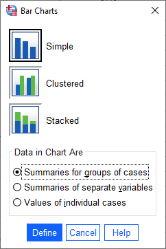{kind=link}
Make sure that Simple is selected and that the selection under Data in Chart Are is
Summaries for groups of cases before clicking Define:
{kind=link}
Under Bars Represent, select Other statistic. Highlight Monthly total precipitation, then click the
arrow button next to Variable:
{kind=link}
If you click on Change Statistic, you can select a number of different statistics to plot:
{kind=link}
We want to plot the Mean of values, so leave this as-is for now.
Hint
Later on, you might want to create a chart showing the median values for comparison…
Click Cancel or Continue to return to the previous window. We want to calculate monthly averages, so click
on the Month recorded variable, then click the arrow button next to Category Axis:
{kind=link}
Finally, click on Options so that we can display error bars. Click the box for Display error bars, and
select Standard deviation. Set the multiplier to 1 standard deviation, rather than the default 2:
{kind=link}
Click Continue to return to the previous window, then click OK to create the bar chart. After a moment
(or few), you should see the bar chart added to the Statistics Viewer window:
{kind=link}
As a final step, change the title of the section to “Average Monthly Precipitation”. That’s all for this lab -
remember to save both your .spv and .sav files to OneDrive, as you will be using them again in next week’s
practical, as well as for the assessment for this part of the module!
Questions
Which month has the highest precipitation in Armagh? What about the lowest? Are there any clear differences in the dispersion (as measured by the standard deviation) of the monthly values?
next steps
If you are interested in additional practice, here are some suggestions:
Use Select Cases to select cases from 1991 - 2020, and create a table showing the descriptive statistics of the temperature variables and precipitation. Do you notice any differences between this period and the period 1951-1980?
Using Split File and the Chart Builder, create histograms of the precipitation for each season, and describe the distributions that you see. What season(s) stand out as the “most”/”least” normal for rainfall?